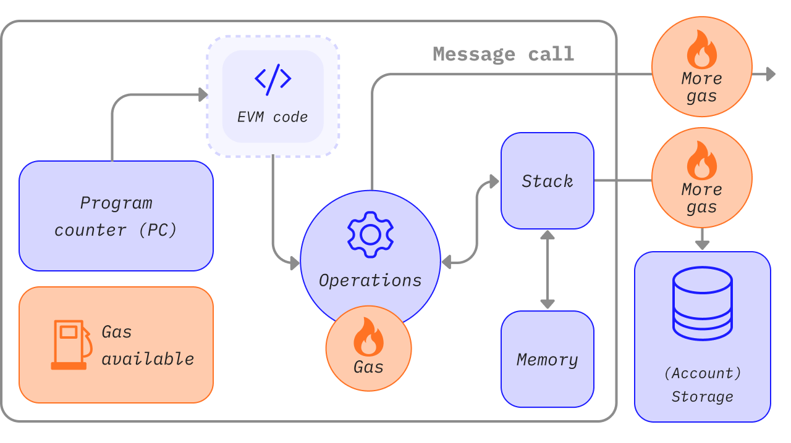

이번 세션은 Solidity를 사용하여 Smart Contract 개발에 대해 이해하는 것이 목적입니다. 여러분은 단순히 문법을 배우는 것을 넘어, 이더리움 생태계의 핵심 원리를 이해하고, 스마트 컨트랙트를 작성하여 블록체인 상에 배포하는 개발 과정을 경험하게 됩니다.
블록체인의 기본 원리를 바탕으로 이더리움이 어떻게 동작하는지 알아봅니다. 사용자가 상호작용하는 계정(EOA/CA), 모든 상태 변화를 일으키는 트랜잭션, 그리고 연산의 대가로 지불하는 가스(Gas) 의 개념을 명확히 이해합니다.
스마트 컨트랙트가 실행되는 격리된 샌드박스 환경인 EVM의 아키텍처를 살펴봅니다. EVM이 데이터를 처리하는 핵심 영역인 스택(Stack), 메모리(Memory), 스토리지(Storage) 의 차이점을 배우고, 이것이 가스비와 프로그래밍에 어떤 영향을 미치는지 알아봅니다.
스마트 컨트랙트의 라이프사이클, 즉 작성 → 컴파일 → 배포 → 실행에 이르는 전체 단계를 명확히 이해하고 컨트랙트의 기본 구조를 파악합니다. 또한, 결정론적 프로그램에 대해 알아 봅니다.
스마트 컨트랙트 작성을 위한 필수 문법을 예제 코드와 함께 학습합니다. 블록체인에 영구히 기록될 상태 변수, 컨트랙트의 기능을 정의하는 함수와 제어문, 그리고 데이터를 효율적으로 관리하는 매핑(Mapping) 과 구조체(Struct) 사용법을 익힙니다.
개발을 위해 Ethereum IDE인 리믹스(Remix IDE) 와 HardHat을 중심으로 개발 환경을 설정합니다. 가상의 테스트넷에 컨트랙트를 배포하고, 작성한 함수의 기능이 올바르게 동작하는지 테스트하고 디버깅하는 방법을 실습합니다.
진행할 프로젝트의 요구사항을 정의하고 아키텍처를 소개합니다. 앞으로 구현해야할 기능과 주의해야할 점을 함께 살펴 봅니다.

블록체인에 영구적으로 저장되는 데이터입니다. 스토리지는 키(Key)와 값(Value) 쌍으로 이루어진 구조를 가집니다. 각 키와 값의 크기는 32byte입니다. 주로 함수 외부에 정의 된 변수, 함수와 같은 스마트 컨트랙트의 주요 정보가 저장되며 영속적입니다 따라서 가스비가 가장 비쌉니다.
함수나 반복문이 실행되는 동안에만 임시로 데이터를 저장합니다. 함수 실행이 끝나면 사라지며, Storage보다 훨씬 저렴합니다. 함수의 경우 함수가 실행될 때 매개변수, 반환값, 함수 내부의 변수와 같은 데이터가 Memory에 저장됩니다. 즉, 함수가 실행될 대마다 메모리는 깨끗한 상태에서 데이터를 저장한 후 함수 실행이 끝나면 데이터가 삭제됩니다.
외부에 있는 함수(EOA(Externally Owned Accounts) 또는 다른 컨트랙트)가 함수를 호출할 때 전달하는, 수정 불가능한 임시 데이터 영역입니다. Memory와 비슷하지만 **수정이 불가능(읽기 전용)**하며, 가스비가 가장 저렴합니다. 주로 가시성 지정자 external이 적용된 함수의 매개변수가 사용합니다.
Stack은 EVM에서 휘발성을 가진 데이터를 유지 관리하는 공간입니다. 보통 Solidity 개발할 때 직접적으로 접근하지 않습니다. Stack의 최대 깊이는 1024입니다.
Solidity 파일의 기본 구조는 다음과 같습니다. 이 구조는 모든 Solidity 계약에서 기본적으로 포함되어야 합니다.
// SPDX-License-Identifier: MIT
pragma solidity ^0.8.24;
contract Hello {
// 스마트 계약 내용
}
MIT 라이선스는 자유롭게 사용하고 수정할 수 있는 조건을 제공하는 오픈소스 라이선스입니다. 다른 라이선스를 사용하려면 적절한 SPDX 식별자를 선택해야 합니다.// 이 변수는 숫자를 저장합니다
uint public number;
// 이 변수는 숫자를 저장합니다
uint public number;
변수는 변하는 값을 가질 수 있는 메모리 공간입니다. 밑의 예시는 변수를 정의하는 방법입니다. 변수를 처음 정의할 때 자료형을 변수에 명시해야 하며 변수명은 예약어만 제외하고 자유롭게 정할 수 있습니다. 예시에서 변수명은 a이고 값은 5입니다. 변수명을 정할 때는 무슨 용도인지 알아보기 쉽도록 작성하는 것을 추천드립니다. 변수명은 주로 소문자로 시작하고 숫자와 특수기호로 시작하는 이름은 지을 수 없습니다.
uint a = 5;
자료형은 데이터를 분류하는 기준이고 크게 값 타입(Value Type)과 참조 타입(Reference Type)이 있습니다. 먼저 값 타입에 대해 알아봅시다. 변수가 전달될 때 값(value)이 전달됩니다. 즉, 이 타입이 함수의 인자로 사용되거나 할당값으로 사용될 땐, 값이 복사됩니다.
! (논리 부정)&& (논리 AND, "and")|| (논리 OR, "or")== (같음)!= (같지 않음)|| 과 && 에는 일반적인 short-circuiting rules이 적용됩니다. 이것은 f(x) || g(y) 에서 만약 f(x) 가 true 라면, g(y) 의 값을 확인하지 않는다면 부작용이 있을 수 있음에도 불구하고 값을 확인하지 않는것을 의미합니다.타입 | ** 범위 ** |
int8 | [-128, 127] (= [-27, -27 - 1]) |
int16 | [-32,768, 32,767] (= [-215, -215 - 1]) |
int32 | [-2,147,483,648, 2,147,483,647] (= [-231, -231 - 1]) |
int64 | [-263, -263 - 1] |
int128 | [-2127, -2127 - 1] |
int256 | [-2255, -2255 - 1] |
타입 | ** 범위 ** | |
uint8 | [0, 255] (= [0, -28 - 1]) | |
uint16 | [0, 65,535] (= [0, -216 - 1]) | |
uint32 | [0, 4,294,967,295] (= [0, -232 - 1]) | |
uint64 | [0, -264 - 1] | |
uint128 | [0, -2128 - 1] | |
uint256 | [0, -2256 - 1] | |
x << y 는 x * 2**y 와 동일하며, x >> y 는 x / 2**y 와 동일합니다. 이는 음수를 시프트하는 경우 부호가 확장됨을 의미합니다.(This means that shifting negative numbers sign extends.) 음수만큼 시프트 연산을 실행하는 경우 런타임 예외가 발생합니다.
// SPDX-License-Identifier: MIT
pragma solidity ^0.8.24;
contract FixedByteArray {
bytes4 public data;
function setData(bytes4 _data) public {
data = _data; // 4바이트 고정 크기의 배열에 데이터를 저장
}
function getData() public view returns (bytes4) {
return data; // 저장된 4바이트 데이터를 반환
}
}
0xdCad3a6d3569DF655070DEd06cb7A1b2Ccd1D3AF) 체크섬 테스트를 통과하지 못한 39자리 ~ 41자리 길이의 16진수 리터럴은 경고를 발생시키고 일반적인 유리수 리터럴로 취급됩니다.
참조 타입은 데이터를 다른 위치에 저장하고 그 위치를 값으로 가집니다. 보통 메모리나 스토리지에 저장할 수 있습니다. 위치에 따라 가스비가 크게 달라질 수 있으므로 주의하여 사용하여야 합니다.
모든 복합 타입은 자신이 메모리나 스토리지 중 어디에 저장되었는지를 나타내는 "데이터 위치"가 추가적으로 존재합니다. 컨텍스트에 따라 항상 기본값이 존재하지만, 타입에 스토리지 나 메모리 를 추가하여 재정의 할 수 있습니다. 함수 매개 변수(반환 매개 변수도 포함)의 기본값은 메모리 이고, 지역 변수의 기본값은 스토리지 이며 상태 변수의 위치는 스토리지 로 강제되어 있습니다.
또한 세 번째 데이터 위치인 calldata 가 있으며, 여기에는 함수 인자가 저장되고 수정 불가능하며 지속성이 없습니다. 외부 함수의 함수 매개 변수(반환 매개변수 제외)는 calldata 에 강제 저장되며 거의 memory 처럼 작동합니다.
데이터 위치는 변수가 할당되는 방식을 변경하기 때문에 중요합니다: assignments between storage and memory and also to a state variable (even from other state variables) always create an independent copy. Assignments to local storage variables only assign a reference though, and this reference always points to the state variable even if the latter is changed in the meantime. 반면, 메모리에 저장된 참조 타입에서 다른 메모리에 저장된 참조 타입을 할당할땐 복사본을 만들지 않습니다.
축하합니다! 성공적으로 이더리움과 스마트 컨트랙트의 개념에 대해 학습하였습니다.